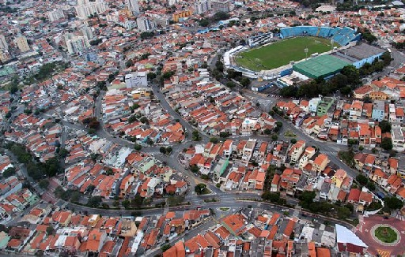
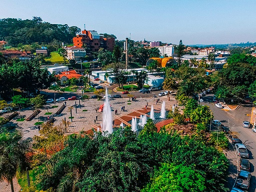
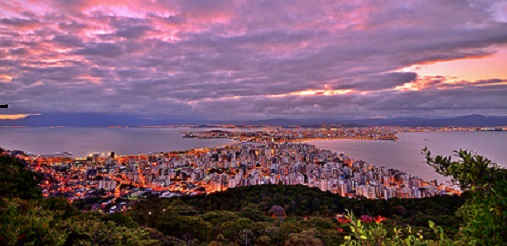
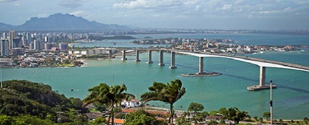
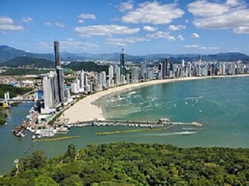

São Caetano do Sul um município brasileiro do estado de São Paulo, na mesorregião Metropolitana de São Paulo e microrregião de São Paulo. Está localizado na Zona Sudeste da Grande São Paulo, em conformidade com a lei estadual nº 1.139, de 16 de junho de 2011 e, consequentemente, com o Plano de Desenvolvimento Urbano Integrado da Região Metropolitana de São Paulo (PDUI). É a cidade com o melhor IDH do Brasil (PNUD/2010) e também com o 48º maior PIB brasileiro. A população aferida no Censo de 2022 foi de 165 655 habitantes, contra os 149 263 habitantes aferidos pelo Censo de 2010. A área total da cidade é de 15,331 km², o que resulta numa densidade demográfica de 10 805,2 hab/km² (censo de 2022). São Caetano do Sul é intensamente conurbada com São Paulo, Santo André e São Bernardo do Campo, estreitando os limites físicos entre as cidades. São Caetano do Sul, juntamente com Ferraz de Vasconcelos, é uma das duas cidades do estado de São Paulo que não são atravessadas por nenhuma rodovia estadual ou federal.

Águas de São Pedro é um município brasileiro do estado de São Paulo, distante 187 quilômetros de sua capital. Ocupa uma área de 3,61 km², sendo o menor município paulista e o segundo menor município brasileiro em extensão territorial, sendo maior apenas que Santa Cruz de Minas (MG). O seu Índice de Desenvolvimento Humano (IDH) é de 0,854, sendo o segundo melhor de São Paulo, como também o segundo melhor do Brasil, sendo superado por São Caetano do Sul, no mesmo estado.

Florianópolis, conhecido coloquialmente como Floripa, é um município brasileiro, capital do estado de Santa Catarina, Região Sul do país. O município é composto pela ilha principal, a ilha de Santa Catarina, a parte continental e algumas pequenas ilhas circundantes. Florianópolis é também apelidado de "Ilha da Magia", decorrente de seus folclóricos contos e histórias de bruxas e criaturas mágicas que habitam na ilha, popularizados pelo escritor Franklin Cascaes

Vitória é um município brasileiro, capital do estado do Espírito Santo, na Região Sudeste do país. É uma das três capitais do país cujo centro administrativo e a maior parte do município estão localizados em uma ilha, no caso, a Ilha de Vitória[7] (as outras ilhas-capitais são Florianópolis, em Santa Catarina, e São Luís, no Maranhão). Situada a 20º19'09' de latitude sul e 40°20'50' de longitude oeste, Vitória limita-se ao norte com o município da Serra, ao sul com Vila Velha, a leste com o Oceano Atlântico e a oeste com Cariacica.
Com uma população de 369 mil habitantes, segundo estimativas de 2021 do Instituto Brasileiro de Geografia e Estatística (IBGE), a cidade é a quarta mais populosa do estado (atrás dos municípios limítrofes de sua região metropolitana: Vila Velha, Serra e Cariacica) e integra uma metrópole denominada Grande Vitória, com cerca de 2 milhões de habitantes. Vitória é cercada pela Baía de Vitória e é uma ilha de tipo fluviomarinho, mas outras 34 ilhas e uma porção continental também fazem parte do município, perfazendo um total de 93,381 km².[8] Originalmente eram 50 ilhas, muitas das quais foram agregadas por meio de aterro à ilha maior.

Catarina, Região Sul do país. Pertence à Região Metropolitana da Foz do Rio Itajaí e encontra-se a cerca de 80 km da capital do estado, Florianópolis. Sua população, de acordo com o Censo de 2022, é de 139.155 habitantes[2], porém pode chegar a mais de um milhão durante o verão. A cidade, com suas colinas íngremes que caem até o mar, é popular entre os sul-americanos. A principal via beira-mar é a Avenida Atlântica. Tem um teleférico que liga a praia central da cidade à praia de Laranjeiras.